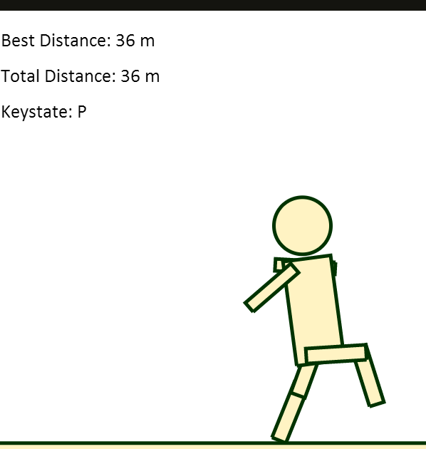
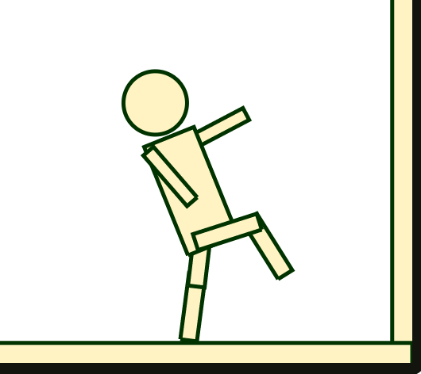
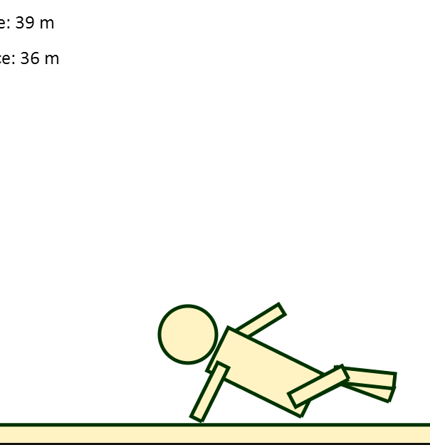

Q(wop)
Q(wop), also known as qwop-ai, is a learning agent I developed to solve a physics-based walking game. You can find the game here. Use the Q,W,O and P keys to move the ragdoll, and see how far you can get!
After taking Intro to AI (CS188), I was inspired to write an AI to tackle the brilliantly frustrating flash game QWOP. Unable to find a free non-flash port of the game, I wrote my own walking game in Javascript using the JBox2D physics engine and HTML5 canvas — similar to the original game, the player controls 4 keys: Q,W,O and P, which rotate the hip and knee joints of a ragdoll.
The learning agent combines two primary techniques: reinforcement learning and artificial neural networks.
For the former, I implemented and ran a supervised Q-learning algorithm for roughly 10 hours to map states (as described by six features) and actions to utilities. While this yielded good results for a majority of the states, the agent would often get "confused" when presented with states it had only seen once, twice, or never before.
I addressed this issue by using neural networks to learn patterns in data taken from successful steps taken by the Q-learning AI. After collecting thousands of datapoints, I implemented a basic feed-forward ANN with a single hidden layer and used back-propagation to train weights and biases. The result is a neural network capable of guessing which outputs (a combination of Q,W,O,and P) might be appropriate for a given state.
This results in a walking agent that (1) relies generally on a lookup table of Q-values to determine its next move, and (2) uses a neural network as a fallback when the Q-values are unknown or otherwise not converged.
In an ideal world, this AI would sprint 100m without breaking a sweat. Unfortunately, there are some areas (i.e. the neural network) that I have yet to optimize. While the AI has walked 70+ meters without tipping over, it still has trouble taking its first step from time to time. I suspect that the ANN might be overfitting, and I'm definitely taking a closer look sometime in the near future.


